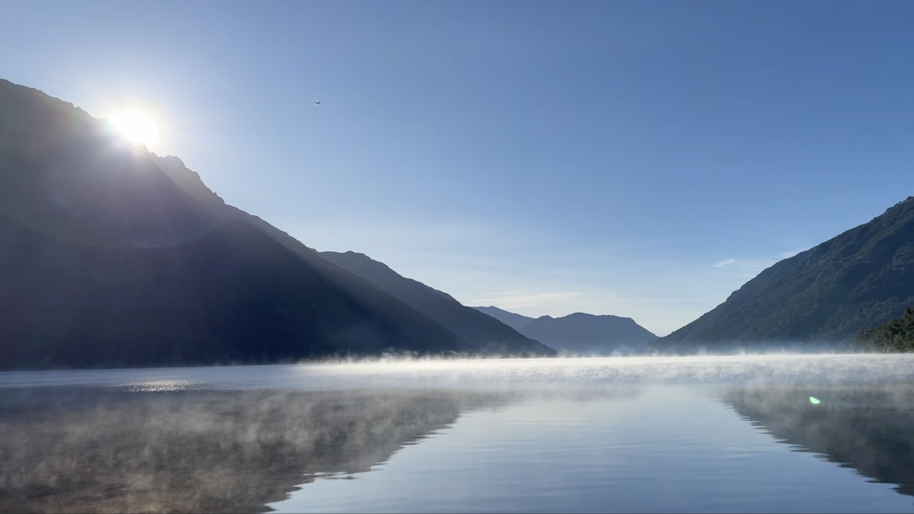

Mis lugares favoritos en el mundo
Neuquén, Argentina
Neuquén me regaló una sensación de paz difícil de describir. Después del ruido y el ritmo de la ciudad, acampar entre montañas, lagos y silencio fue como resetear todo. El aire frío, el reflejo del sol en el agua y el olor a pino me hicieron sentir que el tiempo se desaceleraba. Cada amanecer parecía una postal distinta del mismo paisaje.


El Lago Hermoso fue mi rincón favorito: el agua tan clara que reflejaba el cielo y las noches llenas de estrellas. En el Lago Pichi Traful, acampar frente al agua fue un sueño; despertar y ver la neblina flotando sobre el lago se sintió casi mágico. Más al sur, en Bariloche, las cabañas entre los árboles y las caminatas por cascadas me recordaron lo simple que puede ser sentirse feliz. Tip: no te apures. Caminá, escuchá el río y dejá que el lugar te muestre su ritmo.


Neuquén es de esos lugares que te enseñan a mirar más despacio. Me fui con el alma liviana, con olor a bosque y ganas de volver. Cada rincón del sur tiene algo que contar, y este viaje fue solo el comienzo. Si te gustó este recorrido, te invito a seguir leyendo mis otros destinos favoritos.